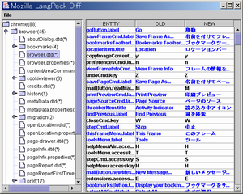

LpDiff
{kind=link}
LpDiff (Language Pack Diff) は Java で書かれた言語リソース差分解析ツールであり、バージョン間の差分を色分け表示したりリソース対照表を生成できます。
リソース対照表の出力は言語リソースファイル毎に個別の HTML を出力するだけでなく、フォルダ内の全リソースを一括比較した結果を 1 つの HTML ファイルにまとめて出力することも可能です。コマンドラインから使用することもできるため処理の自動化も可能であり、言語リソースのメンテナンスには欠かせないツールとなっています。
なお、このツールは既に Localization Tools へと統合されており、その一機能として使用することもできます。
ダウンロード
特に理由のない限り最新版をご利用になる事をお薦めします。なお、LpDiff は Java で書かれているため、ご利用になるには Java の実行環境が必要となります。 Java でコーディングされてはいますが、クロスプラットフォームを意識したコードとなっていないため残念ながら Mac OS X などでは動作しないようです。
- [2004/09/23] 実行可能 JAR, ソースコード
"×" ボタンで終了時にプロセスが残るバグを修正 - [2004/09/22] 実行可能 JAR, ソースコード
">" を含む dtd の実体定義パースに失敗する問題を修正 - [2004/06/21] ソースコード
Ant による自動ビルドに対応(LpDiff本体の変更は無し) - [2004/02/11] 実行可能 JAR, ソースコード
新規ファイルのパス出力が間違っているバグを修正 - [2004/02/11] 実行可能 JAR, ソースコード
新規フォルダ中のファイルを表示しないバグを修正 - [2004/02/02] 実行可能 JAR, ソースコード
欠落していた css を同梱し、不正なコマンドライン引数や不正な保存先パスで異常終了するバグを修正 - [2004/01/19] 実行可能 JAR, ソースコード
不正なパスの読み込みで異常終了するバグを修正 - [2004/01/18] 実行可能 JAR, ソースコード
dtd ファイルの読み込みに関するバグを修正 - [2002/09/24] 実行可能 JAR, ソースコード
properties ファイルの比較に関するバグなどを修正 - [2001/01/10] 実行可能 JAR, ソースコード
古川さんによる最終版
ファイルの同一性確認には MD5 CheckSum をご利用下さい。
このソフトウェアは MPL 1.1(参考和訳) の下で配布されています。
バグや機能追加の要望などお気づきの点がありましたら L10N フォーラム までお知らせ下さい。
原作者と現メンテナ: 古川 良一, dynamis, kozawa